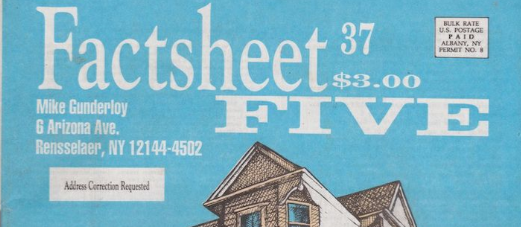

Monday, October the 2nd, 2017
back to: title, date or indexes
Another thing I found in my recent rummage was a small batch of cuttings from the legendary Factsheet Five magazine. Indefatigable editor Mike Gunderloy was a generous reviewer of my (now) out of print Malice Aforethought Press pamphlets and books. Here are some of his observations:

House Of Turps. A curious and delightful little booklet. Key writes in a sort of manic academic style, tracing the life of the obscure chemist-chieftain Slobodan Curpin as he staggers through the early days of the scientific revolution. Experimental windsocks, poultice-making, and a civilisation beneath the Arctic ice all make perfect sense here. Much better than the usual dreary textbook treatment of this sort of thing. Maddeningly sensible and discordant at the same time.
The Immense Duckpond Pamphlet. More bizarre prose from the fevered mind of Frank Key. This is a sort of murder mystery, replete with an ogre who proves to be a detective, soup recipes, signs from bizarre pubs, potato science, and even duckponds. Frank has a style all his own, which most of us could not approach even with the use of large quantities of illicit drugs.
Twitching And Shattered. This is a collection of many of Frank's shorter works, including the infamous “Tales of Hoon” and his series of dustjackets for forthcoming books. It also contains the wildly funny “Some Lesser-Known Editions Of The Bible”, an exercise in parodied scholarship that had me rolling on the floor. I like Frank's writing quite a bit. He has a perfectly deadpan style that can string together the most utter nonsense and make it fascinating. Personally, I find this style delicious, whether Frank is writing of mysterious foreign agents, trips to Iceland, or bicycles and earwigs. If you're fond of relatively sophisticated and curious humour, you too should own a copy.
Ah, those were the small press days, in the pre-www world. Now you get the outpourings of my allegedly “fevered mind” absolutely free, on an almost daily basis. That being so, remember you can always send a donation by hitting that Paypal link over to your right …